서울대학교 컴퓨터공학과 이재진 교수님의 "확장형 고성능 컴퓨팅" 강의를 필기한 내용입니다.
Synchronize
- 왜?: 순서를 정하기 위해 + Mutual exclusion 를 달성하기 위해 이런짓을 한다.
- 정확하게 알자: 공유 공간에 여러 실행흐름이 접근하는 것을 data race 라고 하고, 이때 발생하는 문제를 해결하기 위해 여러 실행흐름들의 순서를 제어하는 것을 concurrency control 이라고 한다.
- 조건: (1) 여러명이 접근 (2) write 가 수반됨 (3) 보호되지 않음.
- access 순서가 정해져 있지 않다 맞죠? (non-deterministic)
- 보통은 이 상황은 문제가 있는 고쳐야 하는 것이지만 의도적으로 사용하기도 한다 (busy-wait, lock-free).
- Barrier: 모든 실행 흐름 (thread) 가 여기에 도달할 때 까지 먼저 도달한 애들은 멈추는 것.
- … 이라는 func 가 있어서 func call 로 실행된다.
- 주의할 것은 “모든 애들” 이기 때문에 if-else 의 경우 if 와 else 모두에 적어줘야 한다.
- 아니면 누군가는 barrier 에 걸리지 않기 때문에 나머지 애들이 다 멈춘상태로 지속된다.
- Busy-wait sync: 반복문 돌면서 확인하며 기다리는 것.
- 아래 경우에는 data race 가 있지만, sync 를 하기 위해 사용하고 있는 셈이다.
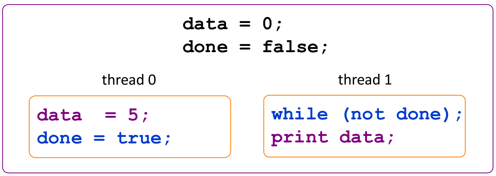
- Thread safety: 두개 이상의 스레드가 접근해도 항상 의도한 대로 동작하는 함수
- 즉, 이런 data race 문제가 해결되어있는 함수를 말한다.
- Atomicity: all or nothing
- 또한 중간 결과를 다른놈이 볼 수도 없다.
- Mutual exclusion (Mutex): 한번에 하나의 실행 흐름만 어떤 코드를 실행할 수 있을 때 해당 코드는 “Mutual exclusion (상호배제) 적으로 실행된다” 라고 한다.
- Mutex 로 atomicity 를 달성할 수 있고
- Mutex 하게 실행되는 부분을 critical section 라고 한다.
Lock
- Lock 은
- 두 가지 상태: (1) Locked 와 (2) Unlocked 가 있다.
- 그리고 두 가지 operation: (1) Lock 와 (2) Unlock - 얘네는 atomic하게 실행된다.
- 당연히 누군가가 lock 을 걸면 unlock 할때까지 다른 놈은 lock 하지 못하고 기다리게 해서 순서를 정하게 된다.
Sleeplock
- Sleeplock 은 OS 가 개입해서 lock 을 위해 기다리는 놈을 block 하고 unlock 되면 다시 ready 로 바꾼다.
- 장점은 busy wait 하지 않다는 것이지만
- 단점은 state change 에 OS 가 끼어드니까 overhead 가 있다. - 따라서 lock 을 잠깐만 잡고 있는 경우 (state 가 빠르게 바뀌는 경우) 에는 비효율적이다.
Spinlock
- Spinlock Busy wait 의 일종: loop 을 돌면서 unlock 되었나 확인하는 것
- 말 그대로 spin-waiting
- 왜인지는 모르겠는데 uniprocessor 에서는 사용하지 못한다고 한다.
- 장점은 state change 가 빠르다는 것
- 단점은 wait 시에 cpu 를 사용한다는 것
- 따라서 lock 을 길게 잡는 경우에는 비효율적이다.
- 이걸 위한 instruction 이 별도로 마련되어 있다.
test_and_set,compare_and_swap등- 당연히 얘네들은 atomic 함
void lock(bool *L) {
while (test_and_set(L));
}
voi unlock(bool *L) {
*L = 0;
}- 위의 instruction 을 사용한 spinlock 구현을 한번 보자.
test_and_set는 해당 값이false면true로 바꾸고false반환,true면true반환- 하지만 위 코드는 cache 가 끼게 되면 문제가 있다.
test_and_set은 mem 을 바꾸기 때문에 mem 에서는 바뀌었는데 cache 에서는 안바뀌었을 수가 있음
- 그래서 이걸 해결하기 위해서는 항상 memory 에 접근하거나 cache 까지 바뀔 때 가지 기다리는 방법이 있다.
void lock(bool *L) {
while (test_and_set(L)) {
while (*L);
}
}
voi unlock(bool *L) {
*L = 0;
}- 위 코드가 cache 까지 바뀌는지 고려하는 것
- 이게 더 좋은 이유는 만약에
test_and_set으로 매번 memory 에 접근하면 memory bandwidth 를 차지한다는게 문제이기 때문.- 사실 근데 다른놈도 저
lock함수로test_and_set을 호출할 텐데 그럼 항상 memory 에 접근하는 거 아닌가 싶기도 함
- 사실 근데 다른놈도 저
Lock 의 문제점
Deadlock, Expensive
- 뭐 lock 을 이상하게 잡으면 당연히 deadlock 이 걸리고
- Lock 은 sleeplock 이든 spinlock 이든 synchronize 를 할 필요가 없으면 불필요했던 overhead 가 있는거니까 그만한 비용이 있다.
Priority inversion
- OS 는 thread 간 NICE 로 우선순위를 조정 (기억안나면 aos 참고) 하는데
- 근데 우선순위가 낮은 놈이 lock 을 잡으면 우선순위가 높은놈이 cpu 를 할당받아도 lock 때문에 실행되지 않기 때문에 우선순위가 반전되는 (Priority inversion) 문제가 있다.
- 물론 이 문제는 processor 가 하나 있을 때만 해당되는 얘기긴 하다.
- 이걸 해결하기 위해 critical section 에 들어가면 끝까지 context switch 를 하지 않는 등의 해결책이 제안되었다고 한다.
Semaphore
- Semaphore 는 0 이상의 정수값이고 다음의 두 atomic operation 을 제공하는 놈이다:
P(sem_post): semaphore 가 양수면 1을 감소하고 return (lock 을 하나 거는 셈), 0 혹은 음수면 기다림V(sem_wait): semaphore 를 1 증가하고 return (lock 을 하나 푸는 셈)
- Semaphore 는 무조건 sleep lock 처럼 작동한다: kernel 을 탄다 이거야.
- 대강 두 가지 종류가 있다:
- Binary semaphore 는 lock 과 같다.
- Counting (general) semaphore 은 sem 이 1보다 클때
- 이놈은 다수의 자원이 있는 상황에서의 접근을 제어하는 용으로 사용된다.
- 참고로 다익스트라가 고안했다고 한다.
Producer, consumer pattern
- Thread 의 타입을 producer, consumer 로 나누는 패턴이 Producer, consumer pattern 이다.
- Producer 가 데이터를 생산하고 consumer 가 가져가는 역할이다.
Circular buffer (Circular queue)
- Producer, consumer pattern 을 구현할 때는 circular buffer 를 활용한다.
- 알다시피 생긴거는 시계처럼 생겼는데
- 구현은 array 에 atomic counter 가 있고 실제 접근할 때는 array size 를 modulo 한 값을 index 로 해서 접근하는 방식
Implementation
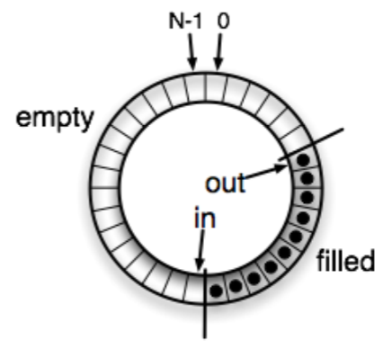
in이 producer 가 넣는 위치,out이 consumer 가 가져가는 위치를 나타내는 변수다.- 따라서
in과out이 같아지면 empty 이고,in이out보다 1 크면 full 상태이다.
- 따라서
- 근데
in,out은 producer 와 consumer 가 모두 보고 있으니까 이놈에 대해 보호해줘야 한다.
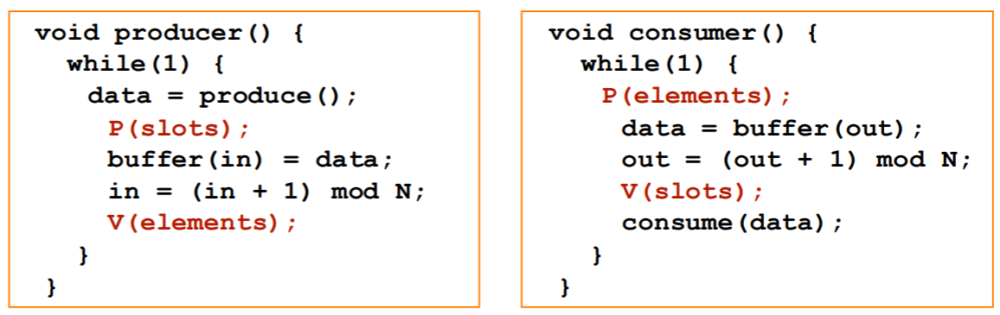
- 우선 위 그림은 Semaphore 두개 (
sem_slot,sem_elem) 를 사용하는 방법이다.- Producer 는
sem_slot을 줄이고sem_elem을 늘리고, - Consumer 는
sem_elem을 줄이고sem_slot을 늘리도록 하면 가능하다.
- Producer 는
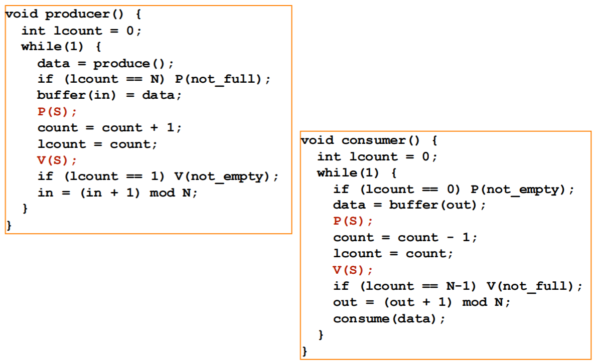
- 아니면 위 그림처럼 공유 counter (
count) 를 binary semaphore 로 보호하고, 각자의 공간에 이놈의 copy (lcount) 를 구비해서 구현하는 것도 가능하다.
Lock-free (Non-blocking synchronization)
- Lock-free 는 말 그대로 race 상황에서도 다른 놈을 block 하지 않는 concurrency control 알고리즘을 통칭한다.
- 장점은 deadlock, lock overhead, priority inversion 등의 문제가 없다는 것
- 그리고 sleeplock 의 관점에서는, block 되지 않으니까
- Context switch, page fault, cache miss 등의 상황을 완화할 수 있다.
- 단점은 alg 가 경장히 복잡하다.
- Critical section 의 크기를 조절해서 단점을 완화할 수 있긴 하지만, 여기에도 trade-off 가 있다.
- 크면 병렬성은 줄어들지만 lock 을 자주 안걸어도 되니까 lock overhead 가 적고
- 작으면 반대
Non-blocking single-producer, single-consumer
- Non-blocking single-producer, single-consumer 는
- 간단하게 설명하면 producer 와 consumer 각자가
in,out을 copy 를 뜬 다음에 그것을 기준으로만 작업하는 것이다.- 이 알고리즘은 producer 와 consumer 가 각각 한명일때만 가능하다.
- 그림으로 알아보자.
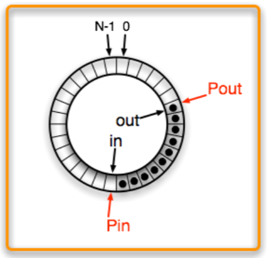
- Producer 가
in,out을 copy 해간다 (Pin,Pout).
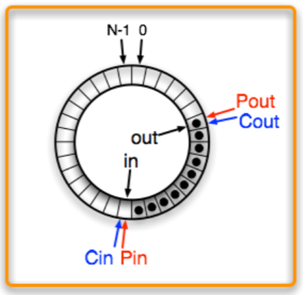
- Consumer 도
in,out을 copy 해간다 (Cin,Cout).
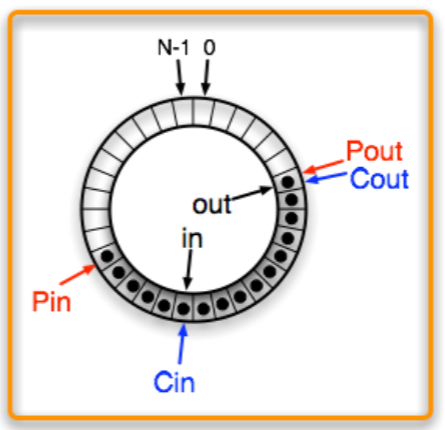
- 그 다음에 Producer 가 작업하면 위 그림처럼 된다. 근데 consumer 입장에서는 이것이 안보인다 (
in,Cin은 여전히 뒤에 있으므로).
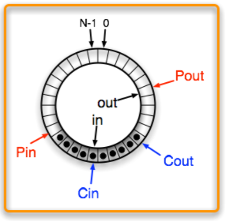
- 그리고 Consumer 가 작업하면 위 그림처럼 된다. 마찬가지로 이것은 producer 에게 안보인다 (
out,Pout은 뒤에 있으므로).
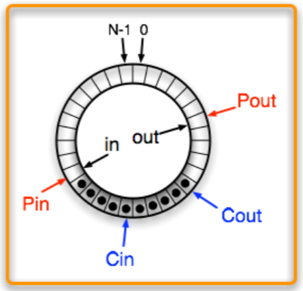
- Producer 가
in을 업데이트하고
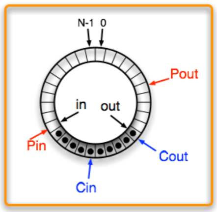
- Consumer 가
out을 업데이트하면 그제야 다음 consumer 가 알게 된다.
Parallelism 고려사항
- 이전에 말한 것 처럼, 순차실행을 할 수 없는 부분 (가령 critical section) 의 크기에 따라 speedup 이 결정된다 (Amdahl’s law).
- 따라서 parallelism 이 클수록 좋기는 한데, 다음의 것들을 고려해야 한다.
- Cache 를 최대한 활용할 수 있도록 locality 를 고려해야 하고
- Load balancing: 모두가 같은 양의 일을 가져가야 한다 (한놈이 너무 오래 걸리면 결국에는 얘를 기다려야 하기 때문).
- Parallelism overhead: thread 생성, 통신, 동기화 등도 고려해야 한다.
- 비유하자면 작은 구덩이를 파는데 인부 10명이 붙는꼴
- 이게 너무 크면 sequential 이 더 나을 수도 있다.
Scalability
여기부터는
2024-10-02강의
- Scale (확장) 은 processor (parallelism level) 를 늘리는 것을 의미하고
- Scalability (확장성) 은 “더 많은 processor 가 있으면 더 성능이 향상될지?” 을 의미한다.
- Parallelism overhead 때문에 성능이 향상되지 않을 수도 있기 때문.
- 이때 Strong, Weak Scaling 을 생각해 작업에 대해 어느 정도의 자원 (parallelism level 로 생각할 수 있을 듯) 을 할당해야 할지 힌트를 얻을 수 있다.
Strong scaling
- Strong scaling 은 일의 양이 일정할 때 processor 의 수를 늘리는 것을 의미한다.
- 즉, processor 각각의 load 가 점차 줄어드는 것.
- Amdahl’s law 를 다시 한번 보자.
- 는 serial portion, 는 parallel portion 이다.
- 이때 이면 이 되어 그냥 선형으로 시간이 늘어나지만, 당연히 이렇게는 되지 않고 다음과 같이 된다.
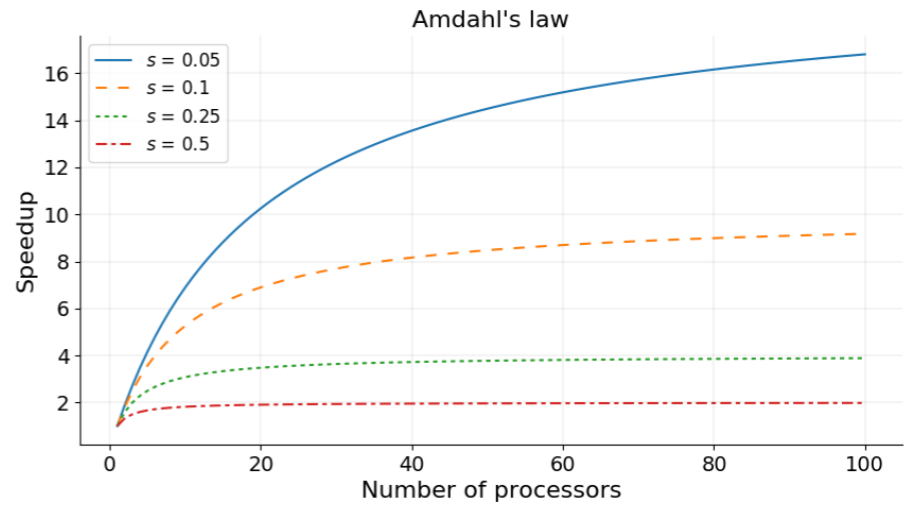
- 즉, 코드에서 와 를 계산해 speedup 을 계산해 보면 strong scaling 의 효과를 분석할 수 있다.
- 그리고 processor 의 수가 많으면 통신 비용때문에도 strong scaling 을 하기 더 어렵다고 한다.
Weak scaling
- Weak scaling 은 processor 의 수에 따라 일의 사이즈 (problem size) 도 비례하여 증가하는 경우를 말한다.
- 즉, processor 의 load 가 일정한 것.
- 따라서 이 때는 speedup 이 1로 일정하게 나오는 것이 ideal 이다.
- 근데 overhead 때문에 실제로는 점점 감소하는 형상이 나오게 된다.
- 이때는 Gustafson’s law 를 고려할 수 있다.
- 는 일정하되 가 processor count 에 따라 비례하여 증가하면
- 다음과 같은 공식이 된다.
- 근데 코드의 양은 이게 맞는데 speedup 은 아니지 않나?
- 이때 그래프는 대략 이렇게 그려진다고 한다.
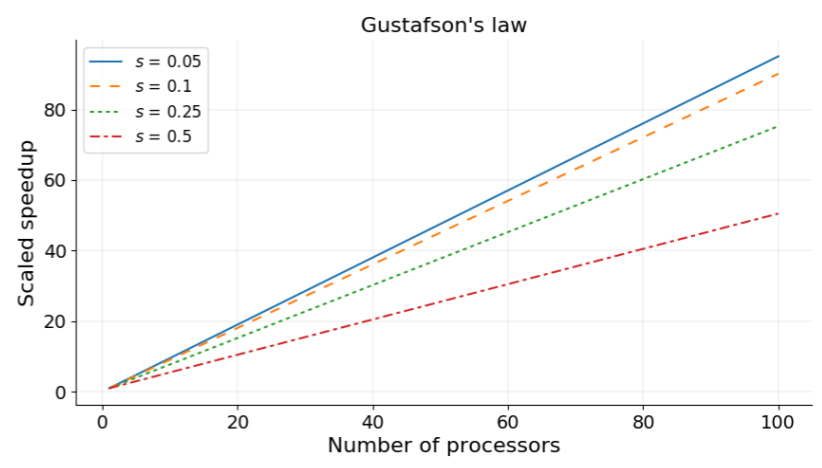